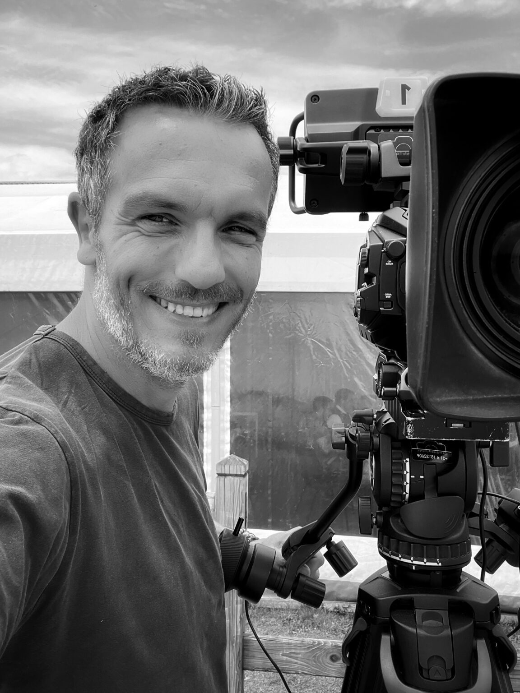
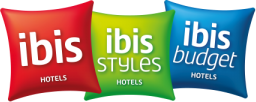
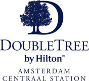
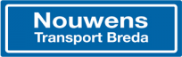
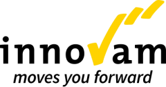
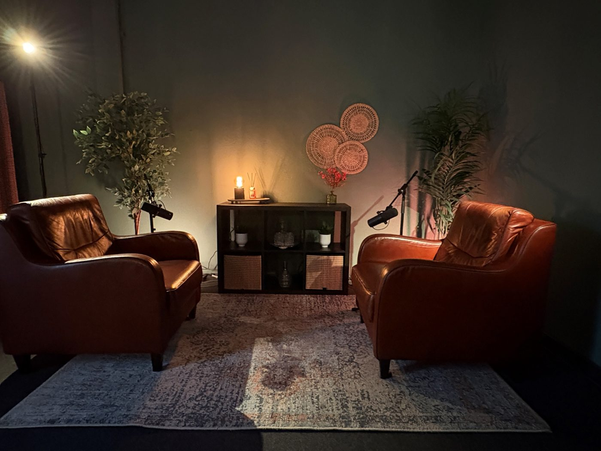
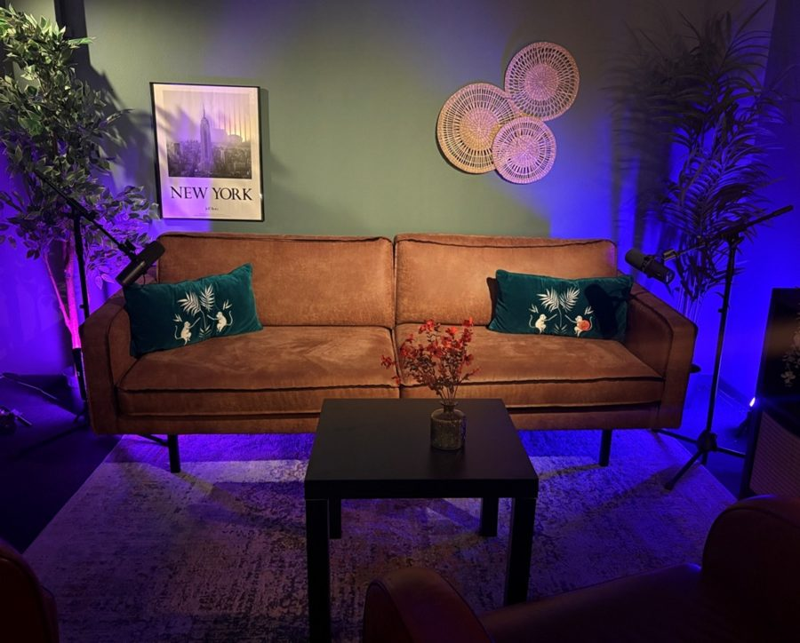
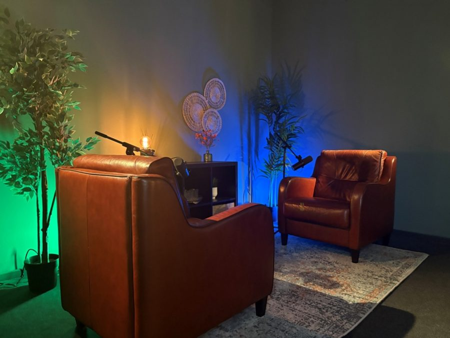
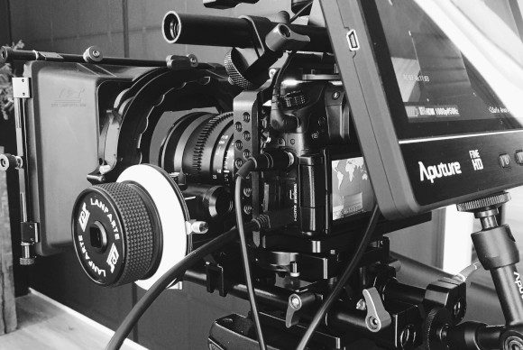

Bedrijfsfilms en podcasts die een verhaal vertellen
Van promotiefilm tot recruitmentvideo, livestream of podcast. Alles draait om het verhaal: wij maken er beeld van dat jouw doelgroep aanspreekt. Vanuit Breda.
Bevlogen vol passie en persoonlijk betrokken.Ronald Slomp, Novotel Eindhoven
Onder andere gemaakt voor




Wat we maken
Een goede video kun je op veel plekken inzetten: op je site, op social media, bij sollicitanten of investeerders.
Promotie- en bedrijfsfilms
Laat zien wie je bent en wat je doet, met een film die past bij je bedrijf en je klanten.
Recruitmentfilms
Laat toekomstige collega's zien hoe het is om bij jullie te werken.
Social media clips
Korte video's voor je kanalen, ook als korte clips uit een langere film of podcast.
Crowdfunding en docu's
Een video pitch die vertrouwen geeft, of een documentaire die het hele verhaal laat zien.
Livestreams
Seminars, presentaties, trainingen en congressen live te volgen, met interactie via de chat.
Vanaf € 995 op locatiePodcasts
Opnemen in onze eigen studio in Breda, inclusief montage en clips voor social media.
Eigen studioEen greep uit ons werk
Show them, don't tell. Klik op een video om hem te bekijken.
Wat klanten zeggen
"Ron was verantwoordelijk voor de productie van de collin crowdfund video pitch t.b.v. van ImProvia. Ron heeft er voor gezorgd dat er een professioneel en goede presentatie is gemaakt van ImProvia als bedrijf en de personen hier achter. Mede door deze video pitch is de funding binnen 3 uur binnen gehaald, echt top!"Peter van de GoorbergImprovia
"Dank je wel voor je inzet en het mooie resultaat met betrekking tot de video's die je hebt gemaakt voor o.a. Novotel Eindhoven. Bevlogen vol passie en persoonlijk betrokken."Ronald SlompNovotel Eindhoven
"Ik heb op drie projecten samengewerkt met Ron, en alle drie zijn beter geworden dan ik had gehoopt. Ron heeft aan een half woord genoeg om te begrijpen wat je bedoelt en de sfeer te creëren die je zoekt. Ik kan hem van harte aanbevelen!"Ad van der LisdonkThrillerauteur
"Working with Ron is a very pleasant experience. Ron is a very enthusiastic person who now what he is doing. The quality of his work is high and very proffessional. When you are talking with Ron about a Request for Proposal for example, he is pro-actively thinking with you to make the product better."Pieter LuitenInnovam



Onze podcaststudio in Breda
Een huiselijke setting met twee comfortabele fauteuils, een lekkere bank, sfeerverlichting en professionele microfoons. Bewust simpel gehouden: geen drukke banners, geen ruis, geen afleiding.
Mensen vergeten dat er microfoons staan. Ze klinken natuurlijker en de gesprekken worden persoonlijker. Ideaal voor bedrijfspodcasts, klantverhalen en interviews.
- Akoestisch rustige ruimte
- Multi-cam videoopstelling
- Begeleiding tijdens de opname
- Montage, intro en outro
- Korte clips voor social media
- Drinks are on the house!
Maak een afspraak en kom de studio bekijken.
Zo werken we
Van eerste gesprek tot eindresultaat. Je verliest nooit de controle over je film.
Kennismaking
Telefonisch of face to face bespreken we je wensen en het doel van de video. Samen maken we een videoplan.
Concept
We vertalen het verhaal naar beeld en geluid, en werken het uit tot een script en shotlijst op maat.
Opnames
Een klein team van ervaren professionals filmt op locatie, in Ultra HD of 4K. Meestal in een halve dag.
Montage
We nemen de eerste versie samen door en werken toe naar het eindresultaat, in elk formaat dat je nodig hebt.

Over RT-FM
"Let's make a story matter."
RT-FM Filmmaking and More is het bedrijf van Ron Tuijtel. Bij elke film, of het nu een bedrijfsfilm, recruitmentvideo of crowdfunding pitch is, draait alles om het verhaal. Dat verhaal maken we zo echt en herkenbaar mogelijk, zodat het je doelgroep raakt en je de video op veel plekken kunt inzetten.
Op locatie houden we het team bewust klein. Zo blijven de beelden authentiek en voelt iedereen zich op z'n gemak voor de camera.
Kennismaken
Vertel kort wat je in gedachten hebt. In een kennismakingsgesprek laten we zien wat jouw film kan opleveren.
Liever even bellen?
Bel of app gerust, of laat je nummer achter en we bellen je terug.